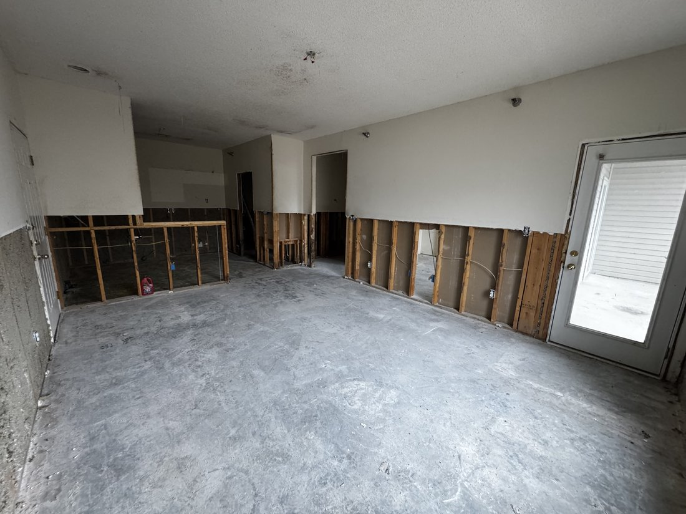
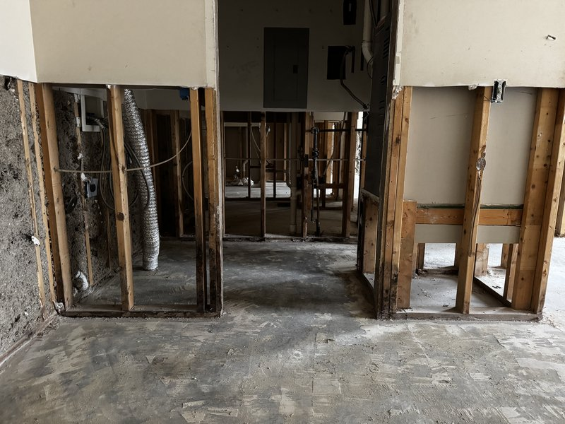
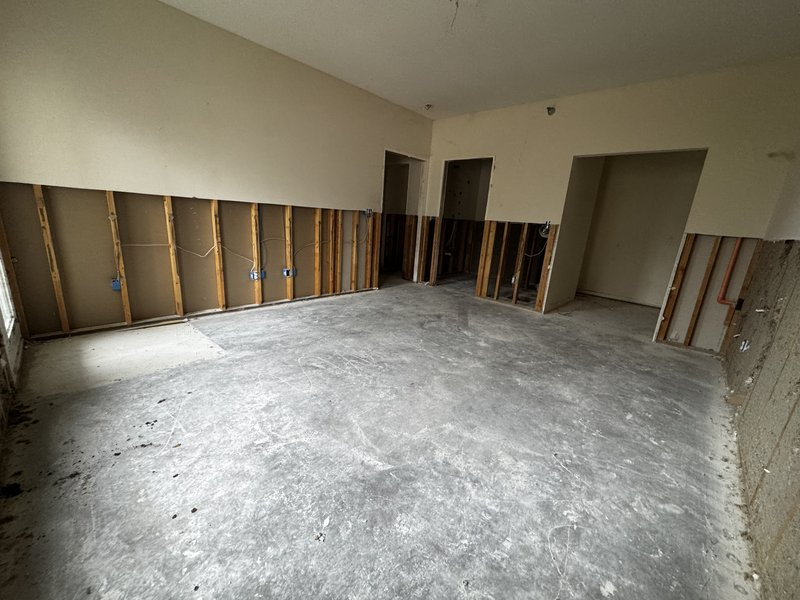

"The tenant signs in six weeks and the space is still full of somebody else's build." That is the call I get from general contractors more than any other, and it is usually a Tuesday.
I'm Chris Kurtz, owner of Atlas Excavation & Demolition in Columbia, MO. We sub commercial strip out demolition for GCs, property managers, and developers across Mid-Missouri. This post is written for the person who has to build the schedule, not the property owner. Here is what the work covers, what it costs, and the one regulatory item that decides whether your demo is a 1 week task or a 5 week one.
Quick Answer: Commercial strip out demolition in Columbia, MO takes a tenant space back to bare structure so a new buildout can start clean. Standard office and retail runs $3 to $8 per square foot, restaurants and medical suites run $7 to $14, and both figures include labor, dumpsters, and haul-off. The schedule driver is not the demolition, it is asbestos. Missouri requires a certified inspector to survey the areas you're disturbing, and if regulated material is found, the state needs 10 working days notice before removal starts. Atlas works as a demolition sub for GCs on a flat written scope. Call (573) 234-6641 or get in touch about subcontracting.
In This Guide:
What Commercial Strip Out Demolition Actually Covers
A strip out, sometimes called soft strip demolition, is the phase where everything a previous tenant installed comes out and the building itself stays. The shell, the slab, the structural columns, the roof deck, and the exterior envelope are all still there when we leave. Everything else is gone.
On a typical Columbia office or retail suite, that means:
- Partitions. Metal stud and drywall interior walls, glass partitions, demountable systems, and the track they sit in.
- Ceilings. Lay-in grid and tile, drywall soffits, and the wire hangers above them.
- Flooring. Carpet, tile, VCT, the adhesive under it, and floor prep back to a slab a new installer will accept.
- Casework and fixtures. Millwork, reception desks, shelving, display walls, cabinetry, restroom fixtures, and signage.
- Mechanical, electrical, and plumbing to the point of the scope. Branch conduit, abandoned wiring, low-voltage cabling, ductwork drops, sprinkler drops, and plumbing back to the wet wall.
Tenant finish demolition is the same work described from the other end of the deal. The lease is signed, the incoming tenant's layout has nothing in common with the old one, and the space has to come back to a blank sheet before a framer can start. Same scope, different paperwork on top of it.

The line that has to be drawn before anybody starts: what stays live. On almost every commercial strip out demolition job there is service the next tenant reuses, whether that's the main panel, a rooftop unit, the fire alarm loop, or the sprinkler main. Mark it on the plan, tag it in the field, and put it in the scope in writing. The expensive mistakes on these jobs are not walls that should have stayed, they are circuits somebody pulled that fed something else.
Strip Out, Interior Demo, or Full Teardown: Which One You Actually Need
Commercial strip out demolition, selective interior demo, and structural work get used interchangeably on bids, and that costs somebody money. Here is how we price them differently.
| Scope | What leaves | What stays |
|---|---|---|
| Strip out / tenant finish demo | All finishes, partitions, ceilings, casework | Structure, slab, envelope, base building systems |
| Selective interior demolition | Only the defined portion of the space | The rest, usually still occupied and in use |
| Structural demolition | Bearing walls, floors, or the frame itself | Whatever the engineer's drawings say stays |
| Full commercial teardown | The entire building, down to the footings | The lot, graded and ready |
If the whole building is coming down, that is a different job with different equipment and a different permit, and our post on hiring a commercial demolition contractor in Columbia, MO covers that side. If you're working around a tenant who is still operating, read the interior demolition post, because occupied-building work has its own rules on dust, noise, and hours.
The one that trips people up is the middle case. A scope written as "strip out" that actually includes pulling a bearing wall is no longer a strip out. That is structural work, it needs an engineer's letter, and it needs to be priced and scheduled as its own line item.
What Commercial Strip Out Demolition Costs in Columbia, MO
Here are the ranges we quote in the Columbia market. These are per square foot of the space being stripped, and they include labor, dumpsters, and haul-off to a licensed facility.
| Space type | Typical range | Why |
|---|---|---|
| Open office / warehouse office | $3 - $5 per sq ft | Light partitions, lay-in ceiling, carpet |
| Retail suite | $4 - $7 per sq ft | Display walls, fixtures, storefront glass |
| Restaurant / bar | $8 - $14 per sq ft | Hoods, grease lines, walk-ins, heavy tile |
| Medical / dental suite | $7 - $12 per sq ft | Lead-lined walls, dense plumbing, casework |
| Asbestos abatement (when present) | +$2 - $3 per sq ft | Separately licensed scope, priced on its own |
Four things move a commercial strip out demolition number more than the square footage does.
Access and the dumpster. A ground floor suite where we can back a roll-off to the door is the cheapest version of this job. A second or third floor space sharing one freight elevator with the rest of the building can add 30% to the labor, because every pound goes down in a cart on somebody else's schedule.
Working hours. If the center is open and we're limited to nights and weekends, that's a premium. Occupied-building work is slower on purpose, with dust barriers, negative air, and protected paths.
Floor prep. Pulling carpet is easy. Getting old mastic and thinset off a slab flat enough for a new tenant's LVT or polished finish is its own line. Ask what flatness spec the incoming finish needs before you accept a demo number, because "remove flooring" and "deliver a slab ready for polish" are different jobs. If the scope runs past the slab into breaking and removing concrete, our concrete removal page covers how that gets priced.
Salvage and diversion. Some landlords want fixtures, doors, and casework saved. Some tenants want a LEED diversion report. Both are doable and both change the labor. Say so at bid time, not at week two.
The Asbestos Survey and Missouri's 10 Working Day Clock
This is the section that matters most, because it is the item that wrecks schedules in Mid-Missouri and it is the one GCs most often assume does not apply to a "light" interior job.
It applies. Missouri is delegated by the EPA to administer the asbestos NESHAP program, and the Department of Natural Resources regulates renovation projects, not just full demolitions. A commercial strip out demolition job on a leased suite is exactly the scenario the rule was written for.
Here is the sequence, in the order it actually happens:
- Survey first. A Missouri certified asbestos inspector inspects the areas your project will disturb. On a renovation the inspection only has to cover the impacted areas, not the entire building, which keeps the cost reasonable on a single suite.
- Lab results come back. Samples get analyzed. This is usually a few days and it is not something to compress.
- If regulated material is found, notify the state. An Asbestos Project Notification goes to the DNR Air Pollution Control Program a minimum of 10 working days before removal begins, which in practice is two calendar weeks. The inspection report and lab results go with it.
- Abatement runs. A licensed abatement contractor removes the regulated material under containment.
- Then general demolition starts. Not before.
Current forms and requirements are on the Missouri DNR asbestos renovation and demolition notification page.
What this means for your schedule is simple. The demolition might be 4 days. The path to being allowed to start it can be 4 weeks. In older Columbia commercial stock, and there is a lot of it downtown and along the Business Loop, the usual finds are 9x9 floor tile and its black mastic, pipe and duct wrap, joint compound, and ceiling texture. Buildings from the 1980s and earlier are the ones to assume something turns up in.
The one piece of advice worth the whole post: order the asbestos survey the day the lease is signed, before the design is even final. It costs a few hundred dollars, it takes a week, and it either clears you to move or it starts the 10 working day clock while you're still drawing. Every strip out schedule I've seen blow up blew up because the survey was ordered after the demo was already on the calendar.
Permits and Working Inside a Live Building
Commercial strip out demolition inside Columbia city limits is permitted through Building and Site Development, and the demolition scope is described on the same application as the buildout that follows it. Removing non-load-bearing partitions, ceilings, and finishes is still permitted work on a commercial property. Applications run through the city's online portal, and current requirements are on the City of Columbia Building and Site Development page. The city allows three business days to process a certificate of occupancy at the end, so build that into the back of the schedule too.
Outside the city limits the picture changes. Boone County does not require a demolition permit. That surprises people, and it is worth knowing because it removes a step on rural and unincorporated commercial jobs. What it does not remove is the asbestos requirement, because that one is state and federal and does not care about municipal boundaries.
Then there's the part that is not paperwork. Most of our strip out work happens in buildings where somebody else is still open for business. That means temporary dust barriers and negative air, protected corridors and elevators, fire watch when a sprinkler zone goes down, coordination with the property manager on trash staging and after-hours access, and keeping the exits clear at all times. None of it is complicated. All of it has to be planned before day one, and it belongs in the demo scope rather than being discovered in week one.
How We Sequence a Tenant Finish Demo Around Your Schedule
The order matters more on commercial strip out demolition than on a teardown, because every step hands off to a trade behind us.
- Walkthrough with the plan in hand. We mark what stays live, what comes out, and where the scope stops. This is where the disagreements are cheap to fix.
- Utility isolation. Circuits killed and tagged, water isolated at the wet wall, gas capped, sprinkler zone coordinated and fire watch arranged if it drops.
- Soft strip. Fixtures, casework, doors, and anything being salvaged comes out first and clean, before the dusty work starts.
- Ceilings, then walls, then floors. Top down. Doing floors first means walking the debris of everything above into the slab you just cleaned.
- Slab prep and final clean. Mastic and thinset off, slab swept and ready for the flatness the next finish needs.
- Walkthrough and punch. You, us, and the plan. Anything on the list gets handled before we pull the dumpster.
We schedule around your framer, not the other way around. If the framing crew starts on a Monday, the space is clean on Friday. Most GCs we work with care more about that predictability than about the last few hundred dollars in the bid, because a demo sub who slides a week costs them far more than that downstream.
The White Box Handoff: What You Get Back

"White box" gets thrown around without a definition, and that vagueness is where disputes start. When we finish a commercial strip out demolition, here is what we hand over:
- Partitions, ceilings, and finishes removed, with the shell and structure intact and undamaged.
- Slab clean and swept, adhesive and thinset removed to the spec agreed at bid.
- Abandoned conduit, wiring, and low-voltage cable pulled back rather than cut and left in the wall.
- Live services clearly tagged, with everything else terminated safely.
- Penetrations through rated assemblies documented so your firestopping sub knows where to go.
- All debris hauled and the space broom clean, with dumpsters gone.
What is not included unless you ask is new drywall on the demising walls, primed surfaces, or a level slab topping. Those are buildout, not demolition. Plenty of landlords use "white box" to mean a finished shell with taped and primed walls, so pin down which definition your lease uses before anyone bids it.
Need a Strip Out Sub You Can Schedule Around?
Flat written scope, a real start date, and a clean slab when we leave. We work as a demolition sub for GCs across Columbia and Mid-Missouri.
Get in Touch About Subcontracting Or Call (573) 234-6641Frequently Asked Questions
What is the difference between a commercial strip out and interior demolition?
They overlap, and most people use the words interchangeably, but there is a useful distinction. Interior demolition is the broad category, which covers anything from pulling one wall in an occupied office to gutting a whole floor. A strip out is the specific version where the space comes back to bare structure, meaning partitions, ceilings, flooring, casework, fixtures, and finishes all leave, and the slab, columns, deck, and exterior envelope stay. On a tenant finish job you are almost always describing a strip out, because the incoming tenant's layout has nothing to do with the old one. If you are only removing part of a space and the rest stays in use, that is selective demolition rather than commercial strip out demolition, and it gets priced differently.
How much does commercial strip out demolition cost per square foot in Columbia, MO?
Most commercial strip out demolition in Columbia runs $3 to $8 per square foot for a standard office or retail space. Light spaces with metal stud partitions, lay-in ceilings, and carpet come in at the bottom of that range. Restaurants, medical suites, and salons run $7 to $14 because of the hoods, grease lines, plumbing chases, lead-lined walls, and heavy tile work. Those figures include the labor, the dumpsters, and the haul-off. What sits outside the number is asbestos abatement, which is a separately licensed scope and typically adds $2 to $3 per square foot when regulated material is actually present. Building access matters too. A ground floor suite with a roll-up door prices better than a third floor space sharing one freight elevator.
Do I need an asbestos survey before a tenant finish demo in Missouri?
Yes, on a commercial building, and this is the item that catches general contractors most often. Missouri is delegated by the EPA to run the asbestos NESHAP program, and the rules apply to renovation work, not just full teardowns. Before the work starts, a Missouri certified asbestos inspector has to inspect the areas your project will disturb. On a renovation the survey only needs to cover the impacted areas rather than the whole building. If the inspector finds regulated material that has to come out, an Asbestos Project Notification goes to the Department of Natural Resources Air Pollution Control Program a minimum of 10 working days before removal begins, with the inspection report and lab results attached.
Do I need a permit for a commercial strip out in Columbia, MO?
Inside Columbia city limits, yes in nearly every case. Commercial interior work goes through Building and Site Development, and the permit application describes the demolition scope alongside the buildout that follows. Removing non-load-bearing partitions, ceilings, and finishes is permitted work on a commercial property even though nothing structural changes. If any part of the scope touches a bearing wall, a shear element, or the roof structure, you are adding an engineer's letter to the submittal. Outside city limits the picture is different, and Boone County does not require a demolition permit at all, though the asbestos rules still apply because those are state and federal, not local.
How long does a commercial strip out take?
The demolition itself is quick. A 3,000 square foot office suite is usually 3 to 5 working days, and a 10,000 square foot space runs 1 to 2 weeks. The schedule risk is never the tearing out, it is the paperwork in front of it. The asbestos survey takes a few days to schedule and get lab results back. If regulated material turns up, the 10 working day notification window to the state starts after that, and abatement has to finish before general demolition begins. That is why a job that looks like a 1 week demo can be a 5 week item on your schedule. Get the survey ordered the day the lease is signed and most of that disappears.
Working With Atlas on Commercial Strip Out Demolition in Mid-Missouri
Commercial strip out demolition is a schedule business more than a demolition business. Anybody can pull drywall. The sub worth keeping is the one who tells you in week one that the asbestos survey is going to cost you two weeks, so you can move the framer instead of eating the delay. Atlas Excavation & Demolition handles strip outs, tenant finish demolition, and selective interior demo for general contractors, property managers, and developers across Columbia, Ashland, Boonville, Fulton, Centralia, and the rest of Mid-Missouri. We're licensed and insured, we answer the phone, and we give you a flat written scope so there's nothing to argue about at invoice time.
- Phone: (573) 234-6641
- Email: hello@deployatlas.com
- Subcontractor inquiries: Contact Atlas